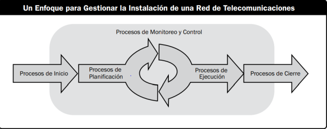

Un proyecto podemos dividirlo en el número de fases que creamos conveniente, entendiendo que cada fase es un conjunto de actividades del proyecto con una relación lógica,
Las fases de proyecto suelen usarse cuando encontramos en una parte del trabajo un proceso único, y casi siempre están vinculadas a un entregable importante, Casi siempre estas fases se presentan en forma secuencial, aunque en ocasiones se superponen, estas fases constituyen una parte del ciclo de vida de un proyecto.
No en todos los proyectos podemos dar una estructura ideal que podamos aplicar, hay proyectos que pueden constar de una sola fase, mientras otros pueden ser un poco más complejos donde sea necesaria la utilización de dos o más fases.

Las relaciones que se pueden dar en proyectos de más de una fase pueden relacionarse de diferentes formas, secuencial, paralela o en superposiciones que tendrán variaciones dependiendo de las características de desarrollo del proyecto
.